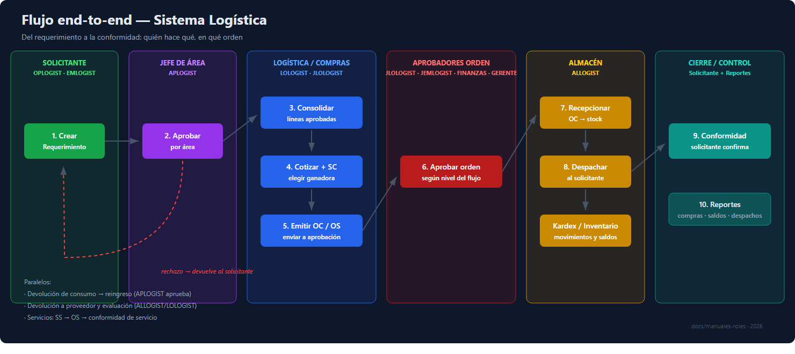

Diagrama del Flujo End-to-End — Sistema Logística

(Versión vectorial para proyección: diagrama-flujo.svg)

Lectura del diagrama
| Nº | Paso | Rol | Pantalla |
|---|---|---|---|
| 1 | Crear requerimiento | OPLOGIST · EMLOGIST · LOLOGIST · ALLOGIST · ADLOGIST · JLOLOGIST | Requerimientos |
| 2 | Aprobar por área | APLOGIST (+ ADLOGIST, JLOLOGIST) | Aprobaciones por Área |
| 3 | Consolidar líneas | LOLOGIST (+ JLOLOGIST, ADLOGIST) | Consolidación |
| 4 | Cotizar + SC | LOLOGIST | Cotizaciones / Solicitudes de Compra |
| 5 | Emitir OC / OS | LOLOGIST | Órdenes de Compra / Servicio |
| 6 | Aprobar orden | JLOLOGIST · JEMLOGIST · FINANZAS · GERENTE | Aprobación OC / OS |
| 7 | Recepcionar | ALLOGIST · LOLOGIST | Recepción de Mercadería |
| 8 | Despachar | ALLOGIST · LOLOGIST | Despachos |
| 9 | Conformidad | Solicitante | Conformidad de Despacho / Servicios |
| 10 | Reportes | Según rol | Reportes |
Flujos paralelos
- Devolución de consumo → reingreso: usuario devuelve → APLOGIST aprueba → ALLOGIST reingresa a stock.
- Devolución a proveedor: ALLOGIST devuelve mercadería defectuosa o en exceso.
- Evaluación de proveedores: ALLOGIST/LOLOGIST califican desempeño tras la recepción.
- Servicios: SS → OS → conformidad de servicio (no pasa por almacén).
Uso sugerido
- Proyección en capacitaciones (abrir
diagrama-flujo.svgen el navegador a pantalla completa). - Impresión tamaño A4/A3 para almacén y oficinas.
- Referencia rápida dentro del Manual maestro.